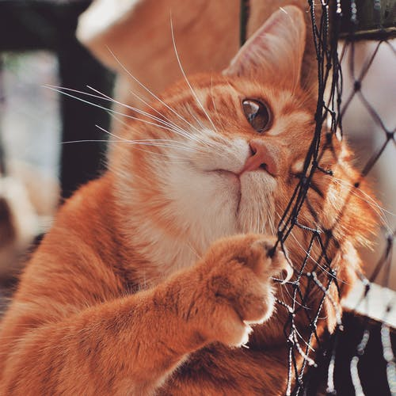

El Refugio es, desde 1996, una organización española
especializada en la ayuda a perros y gatos abandonados
y/o maltratados; una organización totalmente
independiente que no recibe subvenciones de organismos
oficiales, empresas ni partidos políticos. Practicamos
el sacrificio cero, denunciamos judicialmente a los
maltratadores y buscamos adoptantes para todos los
animales que acogemos.

22 de Febrero 2022
Gato
El gato doméstico,llamado más comúnmente gato, y
de forma coloquial minino, michino, michi,
micho, mizo, miz, morroño o morrongo, y
algunos nombres más, es un mamífero carnívoro de la
familia Felidae.
La vaca, en el caso de la hembra, o toro, en el caso
del macho, es un mamífero artiodáctilo de la familia
de los bóvidos. Anteriormente era considerado una
subespecie de Bos primigenius, pero un estudio
reciente lo considera una especie distinta.
Las aves son animales vertebrados, de sangre
caliente, que caminan, saltan o se mantienen solo
sobre las extremidades posteriores, mientras que
las extremidades anteriores han evolucionado hasta
convertirse en alas que, al igual que muchas otras
características anatómicas únicas, les permiten, en
la mayoría de los casos, volar, si bien no todas
vuelan. Tienen el cuerpo cubierto de plumas y, las
aves sensu stricto, un pico córneo sin dientes.
La oveja es un mamífero cuadrúpedo ungulado
doméstico, utilizado como ganado. Como todos los
rumiantes, las ovejas son artiodáctilos, o animales
con pezuñas. A pesar de que el término oveja se
aplica a muchas especies del género Ovis, por lo
general hace referencia a la subespecie doméstica de
Ovis orientalis.
El perro, llamado perro doméstico o can, y en
algunos lugares coloquialmente llamado chucho, tuso,
choco, entre otros; es un mamífero carnívoro de la
familia de los cánidos, que constituye una especie
del género Canis.
El pavo real común (Pavo cristatus), también
conocido como pavo real de la India o pavo real de
pecho azul, es una especie de ave galliforme de la
familia Phasianidae, una de las dos especies del
género Pavo, que desde tiempos antiguos destacó
entre los animales admirados por el hombre a causa
del extraordinario abanico policromado que
constituye la cola de los machos.
El perro, llamado perro doméstico o can, y en
algunos lugares coloquialmente llamado chucho, tuso,
choco, entre otros; es un mamífero carnívoro de la
familia de los cánidos, que constituye una especie
del género Canis.
La cabra (Capra aegagrus hircus) es un mamífero
artiodáctilo de la subfamilia Caprinae que fue
domesticado alrededor del octavo milenio a. C.,
sobre todo por su carne y leche. Al macho de la
cabra se le llama cabrón (si bien en algunos países
esta palabra se considera malsonante), así como
también cabro, chivato, macho cabrío, irasco o
chivo, y a las crías se las llama cabrito, chivo,
chivito o baifo. Al conjunto de estos animales,
criados por el hombre, se le conoce como ganado
caprino o ganado cabrío.